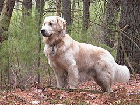

Zwierzątko
Golden retriever – rasa psa należąca do grupy psów aportujących,
płochaczy i psów wodnych, zaklasyfikowana do sekcji psów aportujących.
Typ wyżłowaty. Podlega próbom pracy.
Początki golden retrievera są nieco kontrowersyjne. Początkowo wyhodowana do udziału w polowaniach, rasa ta stała się popularną rasą psów rodzinnych. Rasa pochodzi z Wielkiej Brytanii (Szkocja), została wyhodowana pod koniec XIX wieku. Goldeny prawdopodobnie zostały wyhodowane przez lorda Dudleya Mjoribanksa. W 1858 roku lord miał obejrzeć przedstawienie rosyjskiej grupy cyrkowej, którego główną atrakcją były pokazy kilku owczarków o żółtawej maści. Urzeczony ich umiejętnościami lord odkupił je i przywiózł do swojej posiadłości i to one miały być przodkami goldenów. Chociaż historię tę często przytacza się, gdy mowa jest o początkach rasy, większość kynologów uważa ją za mało prawdopodobną. Owczarki charakteryzują się zupełnie innymi cechami niż psy myśliwskie. Związek z tą opowieścią ma jedynie to, że pierwsze goldeny pojawiły się na wystawie pod nazwą rosyjskich retrieverów.